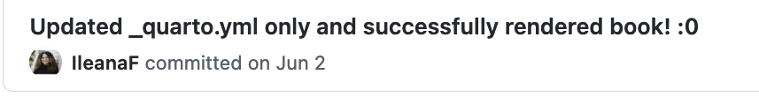
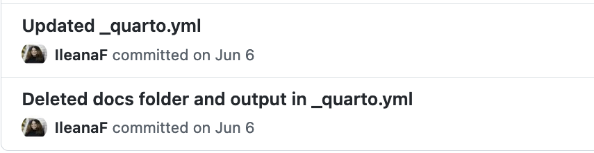
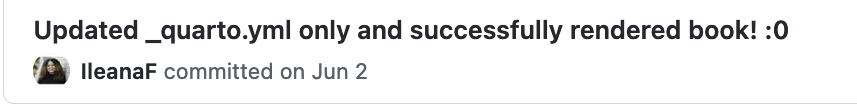
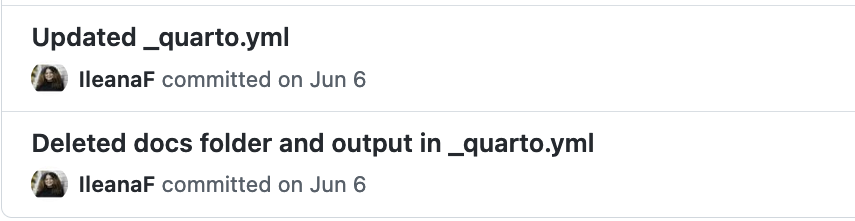
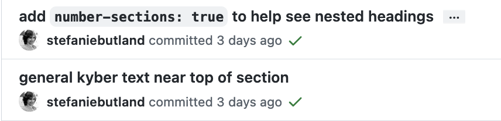
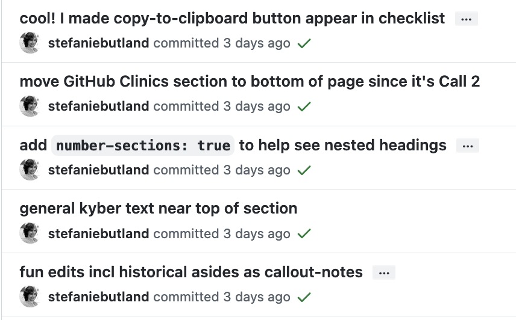

Hello Quarto
share • collaborate • teach • reimagine
https://rstd.io/hello-quarto
Share


Next generation R Markdown


NASA-Openscapes
Develop a cross-NASA mentor community to create & teach common Earthdata Cloud tutorials that are then iterated for specific research examples

Focus on finding the common, peer-learning & teaching culture, contributing as part of their jobs.
2i2c JupyterHub • AWS Credits • Carpentries
Successes = importance of leadership support + empowered, connected early adopters.

Open science as part of the climate movement

“To address our climate emergency, we must rapidly, radically reshape society. We need every solution and every solver. As the saying goes, to change everything, we need everyone. What this moment calls for is a mosaic of voices – the full spectrum of idea and insights for how we can turn things around”
- Ayana Elizabeth Johnson & Katharine Wilkinson,
All We Can Save
1. Engage: Make the implicit explicit

“Prospective students for my research group say how much they appreciate the lab manual and it’s a reason they want to work with us.”
- Dr. Gavin Fay, University of Massachusetts Dartmouth
2. Empower: Onboard learners as contributors
Reinforce a peer-learning & teaching culture
Collaborate across coding comfort levels
Breaks down heirarchy
Upskill team members
Setup for more design together
  
 
 
3. Amplify: Reuse (and credit!) good ideas
Open science as a way to work
Catalina quote: quarto helped me share sooner, comfortable with imperfect 


Reimagining together
So, earth, pale blue dot
We will fail you not.
Just as we chose to go to the moon
We know it’s never too soon
To choose hope.
We choose to do more than cope
With climate change
We choose to end it—
We refuse to lose.
Together we do this and more
Not because it’s very easy or nice
But because it is necessary,
Because with every dawn we carry
the weight of the fate of this celestial body orbiting a star.
And as heavy as that weight sounded, it doesn’t hold us down,
But it keeps us grounded, steady, ready,
Because an environmental movement of this size
Is simply another form of an earthrise.
Excerpt from Earthrise by Amanda Gorman

Image: NASA, Apollo 8, 1968
Summary

Illustration: Presented as 4 quadrants in the Quarto logo
Share.
Teach.
Collaborate.
Reimagine.